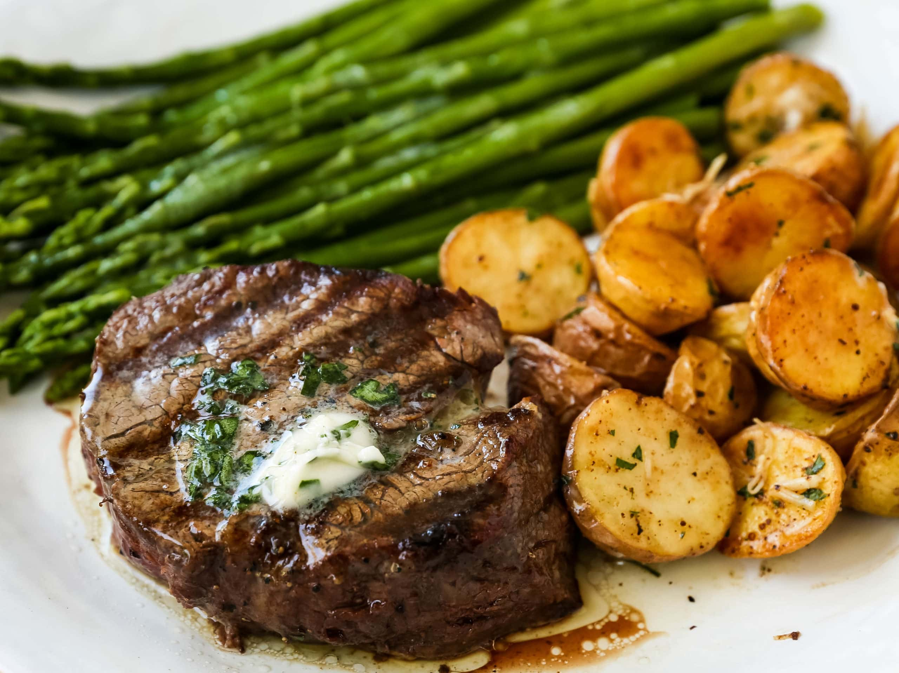

Steak :

A juicy steak
Ingredients :
- 4 Favorite Steaks -- Filet Mignon, Ribeye, NY Strip
- Salt
- Pepper
Steps :
- Step 1:Remove steaks from the refrigerator and let come to room temperature, about 20 minutes. Dot with paper towel if moisture starts to form on the top of the steaks.
- Step 2:Generously season the steak well. Salt is known to bring out the juicy flavor of steak so be generous with salt on both sides. It also helps to create a crust on the outside of the meat so bring on the salt! Also, sprinkle on some pepper on both sides
- Step 3:Heat the grill to high or medium-high (depending on how hot your grill runs). Brush off the grill and carefully brush some oil on the grill to keep the steaks from sticking.
- Step 4:Once the grill is preheated, place the steaks on the grill. The cooking time will depend on several factors -- the thickness of the meat and the desired doneness. A meat thermometer would come in handy to make sure you get the outcome you are seeking. Here is a guide to know when the steak is done. Place the steaks on the grill and cook for 4-5 minutes. Turn over and continue to cook. If you are looking for medium-rare (an internal temperature of 135 degrees F), continue to grill 3 to 5 minutes. For medium steaks (140 degrees F) grill for 5 to 7 minutes. For medium-well (150 degrees F), grill for 8-10 minutes.
- Step 5:Let steak rest for 5 minutes. This allows the juices to remain inside the steak as it begins to cool.
- Step 6:Always slice steak against the grain — meaning that you cut the visibly fibers of the steak in half to shorten them and keep the steak tender.